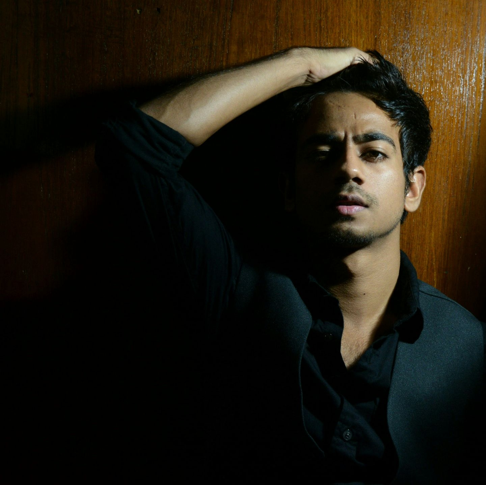

Eye Contact is Essintial
Sometimes eyecontact of modal with the camera gives a very intense and deep feeling to the photograph. A good eyecontact gives very natural feel to shot, but sometimes not having an eye contact is much better then having an eyecontact. This can create a feeling of candidness and also create a little intrigue and interest as the viewer of the shot wonders what they are looking at.
- Aperture: f/4.0
- ISO: 400
- Shutter: 1/40s

Play with Lighting
Lighting is the most important aspect of Photography. In pritrait shot lighting can change the mood of photograph. Having less light in the shot gives intense mood to shot where as bright light express joy. Experimenting with the lighting is the best thing you can do in protrait shots.
- Aperture: f/11.0
- ISO: 125
- Shutter: 1/160s